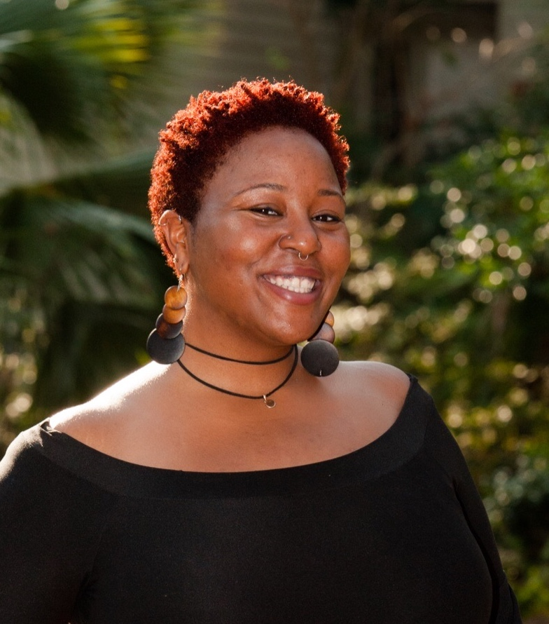

Simone A. Hyater-Adams, a Ph.D student in the ATLAS Institute at University of Colorado Boulder, is a researcher in physics education. She graduated with a B.S. in Physics from Hampton University and spent a year and a half as an undergraduate researcher at NASA. With a passion for creating more opportunities for Black students, Simone uses her personal experiences to guide her interdisciplinary research on identity in physics to attract underrepresented populations into STEM. In addition to working on her dissertation research developing theory to conceptualize the connections of racial identity and physics identity, she develops and facilitates diversity workshops, and is involved in several student organizations at CU Boulder with goals to cultivate a more inclusive and equitable campus.